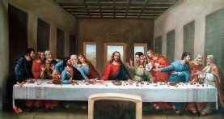

Leonardo da Vinci, hamisi Ludovico Sforza için 1495 ile 1498 yılları arasında Son Akşam Yemeği adlı tablosunu yaptı. Milano, Santa Maria dele Grazie’deki keşişlerin yemekhanesinin kuzey duvarında konumlanmış olan tablo, Batı tarihinde İncil’de geçen bir konunun en ünlü tasvirlerinden biridir.

Son Akşam Yemeği, Yahuda tarafından Romalılar’a jurnallenmeden hemen önce, on iki havarisi ile Paskalya yemeğini kutlayan İsa’yı betimler. Hıristiyan teolojisine göre bu olay, masadaki ekmek ve şarabın İsa’nın etine ve kanına dönüştüğü yemek olarak Komünyon’un ilk kutlamasını oluşturdu.
Tüm figürler, resmin önünde yemekhanede yemeklerini yiyen rahiplerle, kutsal olayı birbirinden ayıran bir çeşit engel vazifesi gören masanın bir tarafında düzenlenir. Soldan sağa havariler Bartholomew, Küçük James, Andrew, Peter, Yahuda ve John görünürler. İsa tam ortadadır. Ondan sonra Thomas, Büyük James, Philip, Matthew, Thaddeus ve Simon gelir.
Rönesans’ın en ünlü İtalyan sanatçılarının biyografilerini yazan on altıncı yüzyıl yazarı Giorgio Vasari’ye göre, da Vinci’nin freski, İsa’nın, “İçinizden biri bana ihanet edecek.” (Matthew 26:21), dediği anı yakalar. Havariler böylece O’nun sözlerine karşı, her biri farklı bir duyguyu –inkar, şüphe, kin, inançsızlık veya sevgi– yansıtan ifadeleriyle gösterilir.
İncil’den konuyla ilişkili diğer parça, İsa’nın,“Bana ihanet edenin eli masada benimle.” dediği Luka 22:21’dir. Da Vinci’nin resminde, masada eli İsa’nın elinin yanında duran tek kişi Yahuda’dır. Yüzü gölgede kalmış, vücudu fiziki olarak İsa’dan ürkmüş haldedir. Sahnenin başka sanatçılarca yapılmış daha eski betimlemelerinde, Yahuda ya grubun geri kalanının dışında kalmış ya da masanın ters tarafında yalnız oturmuş veya halesinden mahrum bırakılmış halde betimlenmiştir. Da Vinci, onu dış özelliklerden çok psikolojik durumuna odaklanan daha gizemli bir tutumla diğer havarilerden ayırır.
Duvar resmi, yapılmasından kısa süre sonra bozulmaya başladı. Zahmetli bir hassasiyetle çalışan da Vinci geleneksel fresk teknikleri kullanmamıştı, çünkü ressamların büyük bir hızla çalışmalarını gerektiriyorlardı. Bunun yerine yüksek oranda kalıcı olmadığı bilinen yağ -ve zamk- bazlı boyaları denedi; birkaç yıl içinde çatlaklar ve küf oluşmaya başladı. Ayrıca 1652’de, duvarda İsa’nın ayaklarının göründüğü bölümü yok eden bir kapı yeri açıldı. On sekizinci ve on dokuzuncu yüzyıllardaki restorasyon teşebbüsleri sadece kısmî başarı sağladı. II. Dünya Savaşı sırasında yemekhaneye daha da zarar veren bir bomba isabet etti. 1978’de büyük bir restorasyon hareketi, İtalyan hükümetince yüklenildi ve Pinin Brambilla Barcilon tarafından yirmi yıldan daha uzun bir süre boyunca denetlendi. Yeni restore edilen fresk, yemekhane iklim kontrolü ile donatıldıktan sonra 1999’da tekrar halka açıldı.